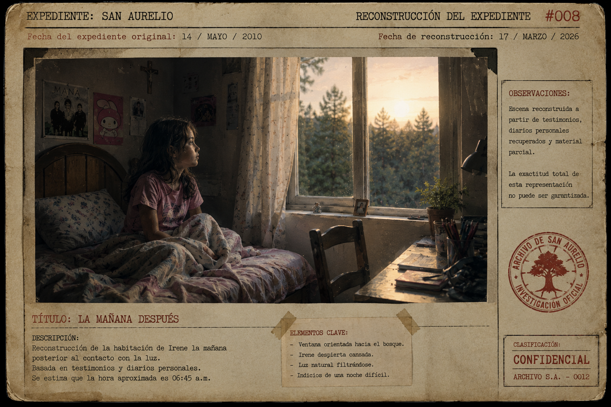
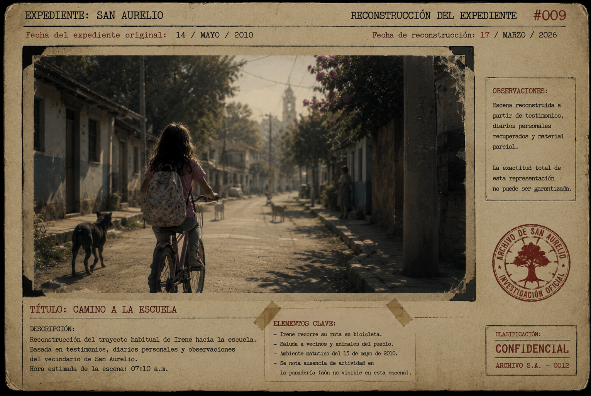
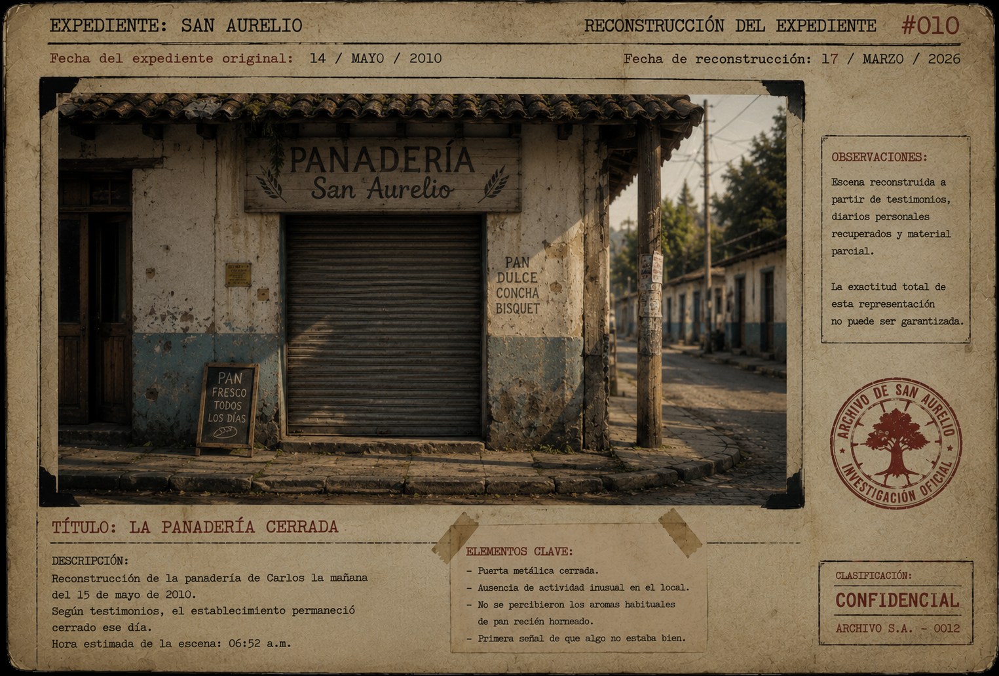
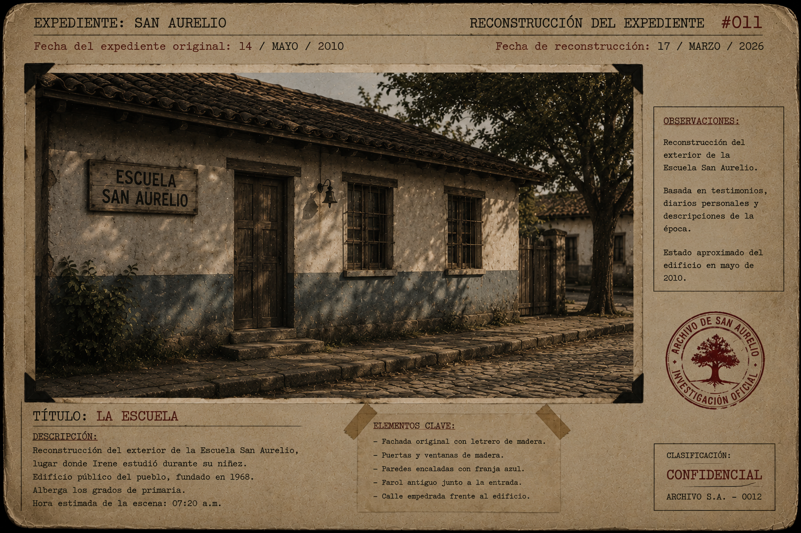
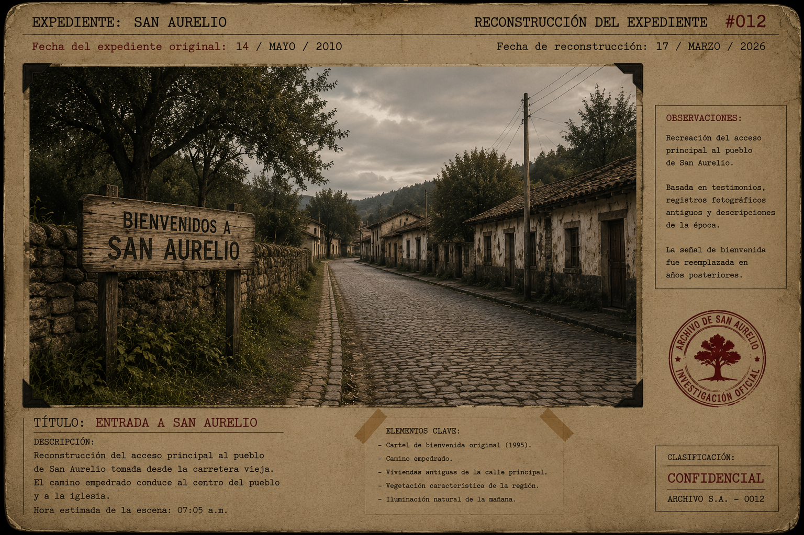
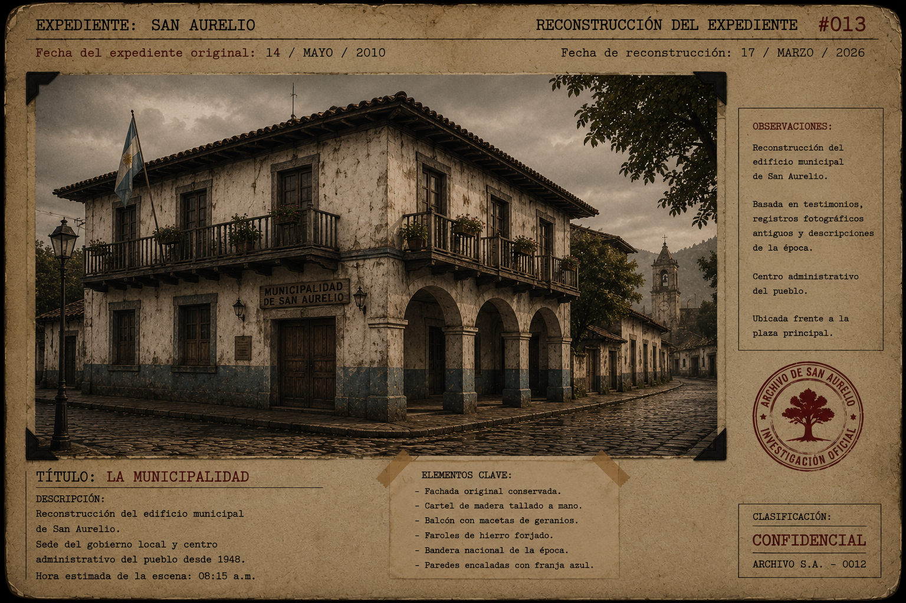
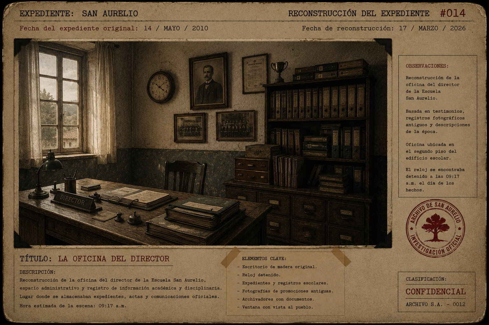
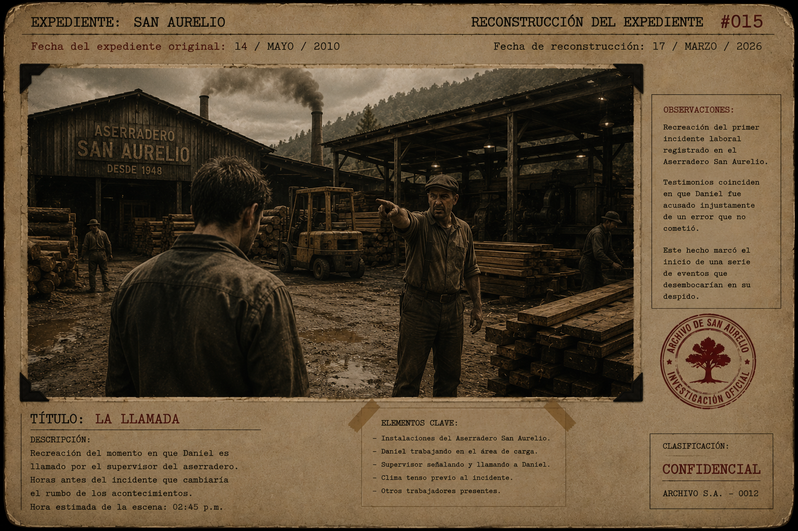
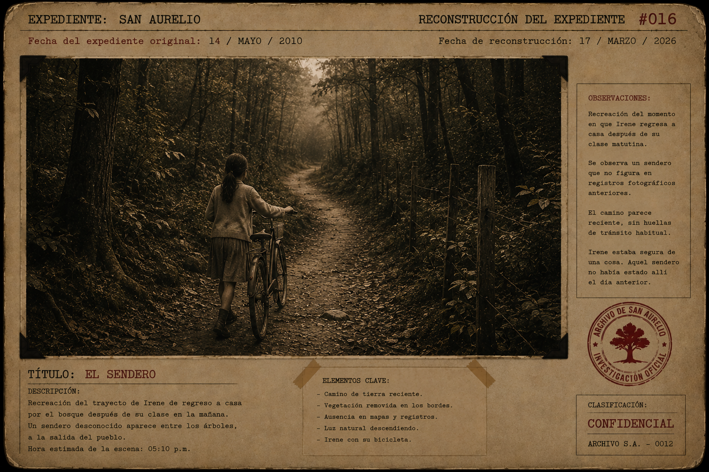

Capítulo I
La mañana después
Nota del Archivo
Las imágenes incluidas en este expediente no corresponden necesariamente a fotografías originales.
Debido al estado de deterioro de los documentos recuperados, varias escenas fueron reconstruidas utilizando testimonios, diarios personales, informes parciales y material fragmentario hallado durante la investigación.
Por lo tanto, algunas representaciones deben entenderse como aproximaciones visuales de los acontecimientos descritos.
La exactitud total de dichas reconstrucciones no puede ser garantizada.
Reconstrucción del Expediente #008
"La mañana después"

Irene despertó convencida de que todo había sido un sueño.
Durante exactamente siete minutos.
Siete minutos en los que permaneció sentada sobre la cama, mirando la ventana sin atreverse a parpadear demasiado. Afuera, el bosque seguía allí. Quieto. Oscuro en algunas partes, iluminado en otras por una mañana que parecía demasiado tranquila para haber nacido después de aquella noche.
La cortina se movía lentamente.
El aire entraba frío.
Nada brillaba entre los árboles.
Nada la llamaba.
Nada parecía esperarla.
Y aun así, Irene no podía dejar de mirar.
Recordaba una luz.
Una voz que no era voz.
Una tristeza que no era suya.
Y una promesa.
—Te acompañaré —susurró, sin darse cuenta.
Al escuchar sus propias palabras, se sobresaltó.
Miró hacia la puerta de su habitación. Nadie había entrado. Sus padres seguían abajo. No discutían. Eso, de alguna forma, también era extraño.
La casa estaba demasiado silenciosa.
Irene bajó los pies al suelo. Estaban fríos. Se vistió despacio, con movimientos torpes, como si una parte de ella todavía estuviera dormida junto a la ventana.
Entonces la vio.
Una hoja pequeña descansaba sobre el alféizar.
No era una hoja del árbol que crecía frente a su casa. Irene lo supo de inmediato, porque conocía ese árbol. Había contado sus ramas muchas veces cuando no podía dormir.
Aquella hoja era más oscura.
Más delgada.
Y en uno de sus bordes conservaba un brillo casi plateado.
Irene extendió la mano.
La tocó apenas.
El brillo desapareció.
La niña retiró los dedos.
Durante unos segundos no respiró.
Después se obligó a sonreír.
—Fue un sueño —dijo.
Pero esta vez no sonó convencida.
Reconstrucción del Expediente #009
"Camino a la escuela"

En la cocina, su madre colocaba platos sobre la mesa sin hacer ruido.
Su padre estaba sentado frente a una taza de café que no había probado. Tenía la mirada fija en algún punto de la pared, como si esperara encontrar allí una respuesta que nadie se atrevía a pronunciar.
Irene se quedó en el umbral.
—Buenos días —dijo.
Su madre levantó la vista.
—Buenos días, hija.
Su padre no respondió de inmediato.
Después murmuró:
—Buenos días.
El silencio volvió a sentarse con ellos.
Irene miró el pan de la mesa. No tenía hambre. O tal vez sí. A veces el cuerpo pedía comida y el corazón pedía otra cosa.
—¿Vas a desayunar? —preguntó su madre.
—No tengo hambre.
—Debes comer algo.
—Estoy bien.
Mintió.
Las dos lo supieron.
Su madre quiso decir algo más, pero no lo hizo. En San Aurelio muchas personas habían aprendido a tragarse las palabras antes de que dolieran.
Irene tomó su mochila.
—Me voy a la escuela.
—Ten cuidado —dijo su madre.
Irene asintió.
Al salir, el sol le dio en la cara.
La bicicleta seguía apoyada junto a la pared. Azul, gastada, con una pequeña marca en el manubrio que ella no recordaba haber visto antes. La tocó con el pulgar. Parecía una mancha clara, casi como si alguien hubiera apoyado allí una luz diminuta.
Decidió ignorarla.
Subió a la bicicleta y comenzó a pedalear.
Contó tres baches.
Cinco perros.
Un gato blanco.
Dos ventanas cerradas.
Y una nube que no parecía nada.
Eso último le pareció injusto.
Las nubes siempre debían parecer algo.
Los vecinos la saludaban mientras pasaba. Algunos sonreían demasiado rápido. Otros bajaban la mirada. Una señora que barría la entrada de su casa dejó de hacerlo cuando Irene pasó frente a ella.
—Buenos días, doña Elena.
—Buenos días, Irene.
La escoba no volvió a moverse hasta que la niña dobló la esquina.
Irene no lo notó.
O quizá sí.
Pero decidió seguir pedaleando.
Reconstrucción del Expediente #010
"La Panadería San Aurelio"

La primera señal de que algo no estaba bien fue el olor.
O más bien, la ausencia de él.
Cada mañana, antes incluso de llegar a la plaza, Irene podía reconocer el aroma del pan recién horneado. Era una de esas cosas que hacían que San Aurelio pareciera un lugar seguro, aunque no siempre lo fuera.
Pero aquella mañana no olía a pan.
No olía a harina.
No olía a horno.
La calle frente a la Panadería San Aurelio estaba vacía.
Irene frenó.
La cortina metálica permanecía cerrada.
El pequeño cartel de madera colgaba inmóvil detrás de la ventana.
CERRADO.
Irene frunció el ceño.
Carlos nunca cerraba.
Ni cuando llovía.
Ni cuando estaba enfermo.
Ni cuando en el pueblo todos decían que era mejor quedarse en casa.
Carlos abría la panadería como si el mundo dependiera de eso.
Como si, mientras hubiera pan sobre el mostrador, algo todavía pudiera mantenerse en pie.
La niña bajó de la bicicleta.
Se acercó a la puerta.
—¿Señor Carlos?
Nada.
Golpeó suavemente.
—¿Está ahí?
El silencio respondió desde adentro.
Irene miró por la ventana. Apenas alcanzó a ver los estantes, algunas bolsas de harina y la sombra del mostrador.
Todo estaba quieto.
Demasiado quieto.
Pensó en la luz de la noche anterior.
Pensó en la bicicleta cubierta de hojas.
Pensó en Carlos mirándola desde la panadería el día anterior.
Entonces dio un paso atrás.
—Tal vez está enfermo —se dijo.
Pero no lo creyó del todo.
Al otro lado del pueblo, Carlos permanecía sentado en su cocina, con las manos apoyadas sobre la mesa.
No había dormido.
No había encendido el horno.
No había preparado la barra de pan extra.
Sobre la pared, el reloj avanzaba lentamente.
Carlos miraba sus manos.
Todavía le temblaban.
La luz había vuelto.
Y con ella, todo lo que había intentado enterrar.
—No otra vez —murmuró.
Pero sabía que ya era tarde.
Algunas cosas no regresan para pedir permiso.
Reconstrucción del Expediente #011
"La escuela"

La Escuela San Aurelio estaba más silenciosa de lo habitual.
Mily llegó antes que los alumnos, como siempre. Abrió las ventanas, acomodó los cuadernos y escribió la fecha en la pizarra.
15 de mayo de 2010.
La tiza crujió al tocar la superficie negra.
Mily se quedó mirando aquellos números unos segundos.
No sabía por qué, pero le parecieron importantes.
Sacó el teléfono de su bolso.
Tenía un mensaje de Daniel.
“Hoy salgo tarde. Hay problemas en el aserradero. No te preocupes.”
Mily leyó el mensaje dos veces.
No le gustó esa última frase.
Cuando alguien decía “no te preocupes”, casi siempre significaba lo contrario.
Escribió:
“Ten cuidado.”
Esperó.
No hubo respuesta.
Los alumnos comenzaron a entrar poco después. Algunos corrían. Otros bostezaban. Dos llegaron con los zapatos cubiertos de barro. Uno olvidó la mochila.
Irene entró casi al final.
Mily la observó de inmediato.
La niña llevaba el cabello un poco desordenado. Sus ojos parecían cansados. Caminó hasta su pupitre sin saludar tan fuerte como de costumbre.
Eso fue lo que más preocupó a Mily.
Irene siempre saludaba como si cada persona necesitara escuchar su voz para empezar el día.
—Buenos días, Irene —dijo la profesora.
—Buenos días, profe.
La respuesta fue correcta.
La sonrisa también.
Pero algo no encajaba.
Durante la clase, Irene miró varias veces hacia la ventana. No hacia el patio. No hacia la calle.
Hacia el bosque.
Mily esperó hasta que los demás comenzaron a copiar un ejercicio.
Luego se acercó a su pupitre.
—¿Dormiste bien?
Irene levantó la vista demasiado rápido.
—Sí.
Una palabra.
Corta.
Perfecta.
Demasiado perfecta.
Mily apoyó una mano sobre el borde del escritorio.
—¿Todo está bien en casa?
Irene bajó los ojos hacia el cuaderno.
—Sí. Todo está bien.
La profesora guardó silencio.
No quiso presionarla.
Había mentiras que los niños decían para evitar un castigo.
Y había otras que decían para proteger a alguien.
Mily reconocía la diferencia.
—Si necesitas hablar —dijo suavemente—, puedes hacerlo conmigo.
Irene asintió.
—Gracias, profe.
Luego volvió a mirar la ventana.
Y por un instante, Mily sintió frío.
Reconstrucción del Expediente #012
"Entrada a San Aurelio"

A esa misma hora, en la entrada del pueblo, el camino empedrado permanecía vacío.
El viejo cartel de bienvenida seguía en pie, inclinado hacia un costado, como si el tiempo también se hubiera cansado de sostenerlo.
BIENVENIDOS A SAN AURELIO.
Nadie se detenía a leerlo.
Para los habitantes del pueblo, aquel letrero era parte del paisaje. Como las piedras. Como los árboles. Como las grietas en las paredes de las casas.
Pero si alguien hubiera observado con atención aquella mañana, habría notado algo extraño.
Las letras parecían más oscuras.
La madera, más húmeda.
Y bajo el cartel, entre las raíces, la tierra estaba removida.
Como si algo hubiera pasado por allí durante la noche.
O como si algo hubiera entrado.
San Aurelio seguía funcionando.
Las mujeres compraban verduras.
Los hombres abrían negocios.
Los niños copiaban tareas.
Pero en los bordes del pueblo, donde las calles comenzaban a perderse entre los árboles, algo se movía sin prisa.
No era una persona.
No era un animal.
No era viento.
Era una presencia.
La misma que había observado a Irene desde la oscuridad.
La misma que Carlos había visto al cerrar la panadería.
La misma que ahora parecía recorrer los límites del pueblo, tocando puertas invisibles.
Buscando.
Recordando.
Esperando.
Reconstrucción del Expediente #013
"La municipalidad"

La Municipalidad de San Aurelio abría sus puertas a las ocho y quince.
Nadie entraba a esa hora.
Pero abría igual.
El edificio tenía balcones de madera, paredes viejas y un olor permanente a papel húmedo. En sus archivos se guardaban actas de nacimiento, registros de propiedad, permisos de comercio y documentos que nadie consultaba desde hacía años.
Algunos cajones estaban cerrados con llave.
Otros no tenían etiqueta.
Y uno, al fondo de la oficina principal, permanecía vacío desde mucho antes de que Irene naciera.
El secretario municipal, don Ramiro, llegó con su paraguas bajo el brazo aunque no había llovido.
Era un hombre metódico.
De esos que creen que el mundo puede mantenerse ordenado si los papeles están en el lugar correcto.
Esa mañana encontró un sobre sobre su escritorio.
No recordaba haberlo dejado allí.
Estaba amarillento.
Sin remitente.
Sin sello.
Solo una palabra escrita a mano:
AURELIO.
Ramiro miró alrededor.
La oficina estaba vacía.
Tomó el sobre con cuidado.
Durante un instante creyó escuchar algo detrás de los archivadores.
Un roce.
Un susurro.
Una respiración.
—¿Hay alguien?
Nadie respondió.
Ramiro guardó el sobre en el cajón y lo cerró con llave.
Luego se convenció de que lo abriría más tarde.
Pero nunca lo hizo.
En San Aurelio, las personas eran buenas aplazando aquello que podía cambiarles la vida.
Reconstrucción del Expediente #014
"La oficina del director"

Después del recreo, Mily fue llamada a la oficina del director.
El pasillo estaba vacío.
La escuela, que minutos antes había estado llena de voces, parecía contener la respiración.
La oficina del director siempre le había resultado incómoda. No por el director, sino por las paredes.
Había fotografías antiguas colgadas allí.
Promociones escolares de años anteriores.
Rostros serios.
Niños con uniformes viejos.
Profesores que ya habían muerto.
Y un reloj detenido.
Las agujas marcaban las 09:17.
Mily lo observó.
—Nunca funciona ese reloj —dijo el director sin levantar la vista de unos documentos.
—Deberían cambiarlo.
—Lo he intentado.
Mily frunció el ceño.
—¿Y?
El director pasó una página.
—Siempre vuelve a detenerse en la misma hora.
La profesora no supo qué responder.
El director le entregó una carpeta.
—Necesito que revise estas listas. Hay alumnos que no han venido esta semana.
Mily abrió el folder.
Tres nombres estaban marcados con lápiz rojo.
Tres niños.
Tres ausencias.
—¿Sus padres avisaron algo?
—No.
Mily sintió un peso en el estómago.
—¿Desde cuándo faltan?
El director dudó.
Ese detalle la inquietó más que la respuesta.
—Desde ayer.
Mily volvió a mirar los nombres.
Uno de ellos estaba escrito justo debajo del de Irene.
No significaba nada.
Pero aun así le molestó.
Como una sombra pequeña sobre una página demasiado blanca.
Entonces el teléfono del director sonó.
Una vez.
Dos.
Tres.
Él contestó.
—Escuela San Aurelio.
Mily observó cómo el rostro del director cambiaba lentamente.
—Entiendo —dijo él.
Luego miró a Mily.
Y colgó.
—¿Qué pasó? —preguntó ella.
El director guardó silencio unos segundos.
—Encontraron huellas cerca del lindero del bosque.
—¿Huellas de quién?
—Eso es lo extraño.
El hombre bajó la voz.
—Dicen que parecen de niños.
Reconstrucción del Expediente #015
"La llamada"

El aserradero San Aurelio estaba ubicado al otro extremo del pueblo.
Allí el aire olía a madera húmeda, aceite viejo y humo.
Daniel trabajaba en el área de carga. Era fuerte, rápido y casi siempre cumplía sin quejarse. Pero tenía un defecto que todos conocían.
No sabía quedarse callado cuando creía que algo era injusto.
Aquella tarde, uno de los trabajadores más jóvenes dejó caer una pila de tablas. El golpe resonó en todo el patio.
El supervisor apareció de inmediato.
—¡Otra vez tú!
El muchacho bajó la cabeza.
—Fue un accidente.
—Los accidentes cuestan dinero.
Daniel dejó las tablas que cargaba.
—No fue culpa suya. La cuerda estaba gastada.
El supervisor giró hacia él.
—Nadie te preguntó.
Daniel apretó la mandíbula.
—Pero yo lo vi.
—Entonces aprende a mirar menos y trabajar más.
Varios obreros dejaron de moverse.
El ambiente cambió.
El humo de las chimeneas subía lento, pesado, como si también quisiera escuchar.
Daniel dio un paso al frente.
—Si la cuerda estaba mal, la culpa no es del chico.
El supervisor sonrió sin humor.
—¿Ahora eres jefe?
—No.
—Entonces cállate.
Daniel no respondió.
Pero tampoco bajó la mirada.
Y eso fue suficiente.
El supervisor señaló hacia la oficina.
—Ven conmigo.
Daniel lo siguió.
Antes de entrar, miró su teléfono.
Tenía un mensaje de Mily.
“Ten cuidado.”
Daniel cerró los ojos un segundo.
Luego guardó el teléfono.
Todavía no sabía que aquella tarde sería el primer empujón.
No la caída completa.
Solo el primer empujón.
Reconstrucción del Expediente #016
"El sendero"

Irene salió de la escuela más tarde que los demás.
No porque quisiera quedarse.
Simplemente había esperado a que Mily dejara de mirarla con esa expresión que los adultos usaban cuando sabían demasiado, pero no lo suficiente para ayudar.
El cielo comenzaba a oscurecer.
La tarde tenía un color extraño.
No era noche.
No era día.
Era ese momento en que las sombras parecen decidir hacia dónde van a crecer.
Irene subió a la bicicleta.
Pedaleó despacio.
Al pasar frente a la Panadería San Aurelio, volvió a detenerse.
Seguía cerrada.
El cartel no se movía.
No había luces.
No había humo en la chimenea.
No había Carlos.
—Mañana va a abrir —dijo.
Quiso creerlo.
Siguió avanzando.
Las calles fueron quedando atrás.
La entrada del pueblo apareció a un lado.
El cartel viejo.
El camino empedrado.
Las primeras sombras del bosque.
Entonces Irene vio algo que no debía estar allí.
Un sendero.
Estrecho.
Cubierto por hojas oscuras.
Abriéndose entre los árboles como una herida reciente.
La niña frenó tan rápido que la bicicleta crujió.
Se quedó mirando.
Aquel camino no estaba allí la mañana anterior.
Tampoco el día anterior.
Ni nunca.
Irene conocía esa zona.
La había recorrido muchas veces.
Allí solo había arbustos, raíces y una cerca vieja.
Pero ahora había un camino.
Un camino limpio.
Silencioso.
Esperando.
El viento se detuvo.
Los pájaros dejaron de cantar.
Irene sintió que algo, muy dentro del bosque, acababa de abrir los ojos.
Dio un paso hacia atrás.
Luego otro.
La bicicleta tembló entre sus manos.
Entonces recordó la promesa.
Te acompañaré.
No sabía si la había dicho en voz alta.
No sabía si había sido un sueño.
No sabía si aquella luz podía escucharla.
Pero el sendero permanecía allí.
Y por alguna razón, Irene tuvo la certeza de que no había aparecido para cualquiera.
Había aparecido para ella.
Irene estaba segura de una cosa.
Aquel sendero no había estado allí el día anterior.
Y sin embargo...
Parecía estar esperándola.
Fin del Capítulo I
LA MAÑANA DESPUÉS